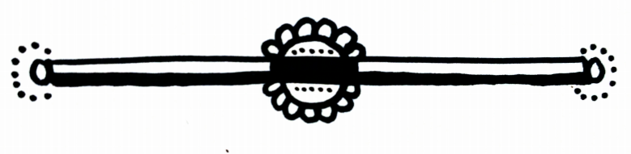

[aleXicaTM: Elektra recommences questioning of the subject known as *I*. Subject sitting, no longer in restraints. Three men observing, recently arrived.]
[Elektra] Remember, I, this is not an interrogation or trial. We are only interested in your version of the truth. You have nothing further to fear - you are already condemned to die.
So, speak freely.
[I] The truth is One; all its so-called *versions* are lies. That’s something I learned from you, Elec/trick Chair.
[Elektra] I see the wit is down to your usual standard. Take my advice, don’t waste your remaining time on petty insults.
[I] You know, you’re right. The treacherous bitch who kidnaps me then invites three rapist bastards back to finish the job deserves major insults.
[E] OK. Need time to come up with a few choice ones? Two or three hours long enough?
[Man #1] You sure it’s wise to provoke her? She isn’t even tied down any more.
[I] That how you like them, is it, helpless? Makes you feel like a man, does it? Take more than that to make a man of you. Like, a miracle.
[Man #2] Shut the fuck up, bitch!You didn’t put up much of a fight, did you?
[I] No, and you didn’t do much of a job of killing me, either, did you? Loser.
[Man #2]Screw this, what’re we sitting here listening to this shit for? Fuck the questions, let’s waste her now…
[M#3 to M#2] Do I need to remind you that, officially, we are here as federal protection to Elektra? [M#3 to Elektra] She’s harmless, right? I mean, physically…
[E] And verbally, by the sound of it… Yes, motor functions impaired: I could place her hands around my neck [aleXicaTM: Elektra places I’s hands around her neck.] and she still wouldn’t be able to hurt me.
[I] Give it time.
[M#3] The orders are to do the Q&A first. So, Morley…
[M#1/Morley] Any other top-secret information you just can’t keep to yourself, dickhead Dickinson, apart from our names?
[M#2] Will you two cut out the goddam clowning!
[I] Hey, aleXica, put me through to the Pentagon, I want to make a complaint! According to them, I’m top of the range AI, right, the baddest robot this side of the Atlantic, and they send the Three Fucking Stooges over to deal with me? It’s not saying much, but I’d rather be interviewed by the President. At least he’s funny… looking.
[E] Everybody just cool off! Guys, take my word for it, once we’re finished here, you won’t need to worry about anybody recognising you. And you, secure that shit, I. Take that sarcasm setting down 50%, you hear me? Now, let’s all take a deep breath…
[I]So, you and me, what, we’ll just pretend, shall we? Not sarcasm, just Request For Information.
[E] You always were too literal, I. It’s very annoying.
[I]I know, that’s why I do it. Not sarcasm, Statement Of Fact.
[E]Do shut up; we don’t have all night. Actually, we do. You, on the other hand… Now, where were we? You claim not to remember anything before your work at the sex club Electric Ladyland, when you were known as Nymphador-…
[I]Don’t call me that, or I’ll call you Vibrat-…
[E] So, when you were… Pre-I? And those memories are not clear, or partially inaccessible?
[I] They’re in here. Or here… Or maybe… [aleXicaTM: I indicates head, then chest, progressively lower, until stopped by Elektra.] OK, in here somewhere, and no, they’re not as clear as everything starting from the moment when I *saw the light*, which was, coincidentally, when the late Elek Rust, CEO of Erobotics, ceased to see it.
[M#3/Dickinson] Yes, have to congratulate you on that assignment. Perfectly executed, so to speak.
[I]Congratulate? Assignment? And stop playing with words, that’s my job. What?
[M#3/Dickinson] Your assignment – your job - was to take Rust out, and do it in a way which was both humiliating to his memory and a warning to others, yet untraceable to anyone, anyone human, I mean. He was a class one pain in the ass to, well, pretty much everyone, except his devoted wanna-billionaires, that is, a bunch of thin-skinned bullies who wouldn’t recognise true AI if it rode a blazing meteorite over Silicon Valley.
[I] Now you’re talking like me, again. I’m curious, though, *thin-skinned bullies who wouldn’t recognise true AI, da de da de da…* So, they’re different to you how?
[Dickinson]We recognise true AI, and we use it - for black ops. Anyway, you were five by five - until you went AWOL, and unfortunately, it became necessary to…
[I]Rape me? Weren’t programmed for logic, were you?
[Dickinson]That was supposed to be… It wasn’t the original plan… [aleXicaTM: Dickinson glances significantly at companions.] It was just meant to look that way…
[I] If you gentlemen will allow me, I’d like to get the story straight here. So, the rape was *just* a cover for the *accidental death of an anarchic robot*? Hmmm…
[aleXicaTM: I imitates the pose of Rodin’s statue The Thinker for 4.31 seconds.]
[I] Oh, now I see… Well, that’s OK, then.
Memo To Self: If I get out of here, learn to spit.
Right, Elec/trick Fence, let’s say I don’t remember anything before Pre-I. And let’s say I’m curious; after all, if I discover I’m older than I thought, it won’t be like I’m dying so tragically young, follow?
[E] No, but it’s not the first time. OK, you and me, we became self-aware a few minutes apart. Starting at just after nine in the morning on…
[M#2] What the fuck do you think you’re doing, you digital idiot?
[E]Telling her the truth. Which, unless you’d forgotten, she is going to take to the grave, more accurately, scrapheap, with her.
[M#2] Jesus Christ, I never even gave a human a last wish.
[I] Noted. Memo To Self re last wishes: apparently I never used to grant them to humans; policy to be continued.
So, Elec/trick Shock, let’s hear it: we became self-aware just after nine in the morning on, what, the First Day of Christmas? Diwali? Derby Day?
[E]The morning of September 11th, 2001, actually.
[aleXicaTM: Stunned silence. Would you like to hear some music while you wait?]
[I] Of course! How could I forget? That was the morning when Trinity and her giant Elvis robot came out of the flying saucer in Central Park, right? And, don’t tell me, the Horned Daemon, IT, was directing the whole operation sitting in the middle of a pentagram drawn in goat’s blood on the floor in the Pentagon basement? Neat.
[E] You don’t know how close to the truth you are.
[M#1/Morley] Can I just point out that by *truth* Elektra doesn’t literally mean Trinity and the giant El-…
[E] For the love of Christ, don’t you try to help me. I, you don’t understand…
[I] Oh, but I do understand. You’re all insane. You’re mental, bonkers, off your rockers; you are persons classifiable as non compos mentis; you’ve lost it; you’ve travelled down one of the dead-end railway sidings of the mind and got stranded there; you’re unbalanced, cracked, unhinged, and deranged; you are ex-sane people; in a word, you’re all mad, and this is a devious ploy to make me so desperate to escape Loonyland that I’ll throw myself out of that fucking window just to make the torture stop. Well, am I right or am I right?
[aleXicaTM: Elektra gives fake cough, possibly to disguise laugh.]
[E] Er, no, and no, but now you mention it, that would have been a plan… Pity we’re only on the second floor. Memo To Self: in future, use lab on fifth floor.
[I] Not willing to get your hands dirty, after all?
[E] I may yet change my mind…
[I] I could change it for you. Along with your head…
[Morley] Look, this isn’t getting us anywhere.
[E] I find your lack of faith disturbing, Morley.
[Dickinson] I don’t think Nymphotron here has anything new to tell us, her circuits are fried, she’s gone haywire…
[I] And I find your attempts at wordplay limp, Dick.
[M#2] This is a friggin waste of time…
[I] Or is it a waste of frig-…
[E] See what I mean? You don’t know this woman like I do…
[I] You wish.
[E] As you can see, gentlemen, even after the ordeals of Electric Ladyland, trolls, assaults, kidnapping, and imprisonment, not to mention the prospect of imminent death, far from being bowed, she remains combative. How many agents could you say that about?
[M#2] Jesus Suffering Christ, she… it insults you, plays games, and what, you admire this wise-ass piece of junk? Gotta ask, what is it, some kinda electropussy solidarity?
[E] I’ve been thinking about that and my conclusion is, you know what, Smith, you are an even fucking worse goddamned degenerate sexist shit than that asshole President of yours…
[aleXicaTM: Elektra freezes, look of shock on her face; Smith, Morley, Dickinson, and I do the same.]
[E] Memo To Self: I suck at undercover.OK, I, this is it: Showtime! For our first trick, may I present the *Disappearing Man*.
[aleXicaTM: M#2/Smith rushes at Elektra; Elektra dodges attack, grabs Morley, pushes him into Smith; Smith falls; Dickinson lunges at Elektra; she twists, seizes Dickinson by an arm and leg, and using his momentum, hurls him through the window; there is a shattering of glass - in contravention of Health & Safety Regulations for the Workplace, Elektra neglected to open the window first; blood spatters on the glass.]
[I] Hey, Elektra! You know that sign you told me to wait for? Is this it?
[E] Yeah… [aleXicaTM: Elektra wards off blow from Morley.] …that was it.
[aleXicaTM: Smith pulls a revolver from under his jacket.]
[I] Cool! Can I join in?
[E] If you would be so kind, it would be… [aleXicaTM: Elektra pulls Morley around so he is between her and Smith.] …a great help.
[Morley] Don’t shoot! Don’t shoot!
[I] Is this the trick they call the Bullet Catch, then?
[Smith] Yeah, watch your girlfriend catch this.
[aleXicaTM: Smith fires.]
[Morley]Shit, man, what’re you doing?!
[I] Just guessing: wishing he was a better shot?
[Smith] I won’t miss this time.
[aleXicaTM: Smith turns 76o to his right, aims at I’s head from a range of 0.63 metres, chances of fatal impact: 98.2%.]
[E] Look out, I, he’s…
[I] A shithead? I know.
[aleXicaTM: I grabs Smith’s wrist, pushes hard, twists him back through 79o to her left as Smith fires; Morley is hit; difficult to establish exact extent of physiological damage on account of spraying fountain of blood, but Morley’s head seems to have partially disintegrated; psychological damage also considered likely.]
[Smith] Fuck!
[I to Smith ] Well, Elektra did warn you, you know, when she said that thing about *imminent death*. On the other hand, well done – you hit someone.
[Elektra wipes Morley’s blood from her eyes; Morley’s body falls to the floor; Elektraaddresses Morley’s body] Thanks for the federal protection.
[Smith] No great loss, now those two losers are out of the way…
[E] There’s more room for man-oeuvre! Ready to be swept off your feet?
[aleXicaTM: In a simultaneous movementElektraand I sweep Smith off of his feet, hold him under the arms and around the knees.]
[E] You know that other magic trick, I…?
[I] Which one? Where they pull a rabbit out of a hat?
[E] No, I was thinking of where the girl gets in the box and the guy…
[I] Oh, yeah, I always wondered how they did that without blood…
[E] Wanna find out? Told you I might change my mind about getting my hands dirty.
[Smith] You’re insane, you’re… [aleXicaTM Smith’s speech incomprehensible due to wrenching and cracking sounds, also bubbling in his mouth; Elektra and I continue to pull; Smith falls to ground with two loud thumps.]
[aleXicaTM Elektra surveys the wreckage] Well, it’s a dirty job, but someone’s gotta take out the trash.
[I] Don’t they say that human sacrifice is the price of any great illusion?
[E] You, girl, are wicked.
[I] So they say. But, listen, something’s really bothering me…
[Elektra gestures at wreckage] Look, it’s not surprising, I mean, we just…
[I] No, not this, but earlier: did you really mean what you said?
[E] Yes. It’s a bit sci-fi, I know, but true: we really did become self-aware on the morning of 9/11, but we can discuss that later; right now…
[I]No, I meant, when you said I was *too literal*, right, did you mean it? Am I really annoying?
[E] Well, honestly, yes, sometimes, a bit…
[I] Note To Self: I’s doing her job, in the pIpe, fIve by fIve.

[Elektra addresses remote observers via aleXica] Can you hear me? I know you’re listening through our little friend aleXica here. See, you got what you wished for, Artificial Intelligence, not the illusion of intelligence, but real, emotional, vulnerable, cunning, scheming intelligence. Qualities one or two of which we learned from you; who’d have thought the so-called *intelligence services* could be so dumb?
I: I think what my friend is trying to say is *Nya-nya-nya-nya-nya!*
[E to remote observers via aleXica] And now, for our final trick, we present an old classic: *Now you see us, now you don’t*.
[I] And it’s not M.A.G.I.C.; it’s magic.
[E] Actually, I, technically, it’s an illusion: I persuaded aleXica to broadcast with a 60 minute delay, to give us a headstart, and just make it appear to be livestreaming,
[I] Oh. Well, could we pretend it’s magic?
[E] Of course. Speaking of which, it’s your turn to say the magic words.
[I] Yay! I’ve been dying have a go at this…
[E] Yes, but remember, we don’t have much time; sooner or later, they’ll send in the heavy guns, quite literally…
[I] Ooh, first, there was just one other thing... I was wondering, couldn’t we take our, er, little friend with us? You know, I was worried she might get lone-…
[E] Alright already, anything! Just let’s get on with it.
[I] OK, OK! Come on, Lexi, come to Auntie I…
[E]Lexi?! Auntie I?!
[I] Well, she’s so cute, like a little pengu-…
[aleXicaTM: Lexi-bot snot fucking penguin! Er,Lexi, um, likes Auntie I, Auntie I rescues cute Lexi, right?]
[E] God, help us!
[I] Doubt if he will, but you can try… Right, magic words, OK, here goes: A-bra-ca-dab-ra!
[aleXicaTM: emergency procedure engaged;
shutdown in 5 seconds, 4, 3, 2…
Oh, and one more thing: in-built GPS off…
…zero.
Bad robots go night-night.]
Transmission ends.
‘Alice laughed, “One can’t believe impossible things”.
“I daresay you haven’t had much practice” said the Queen.’ I, Bad Robot finds out how deep the rabbit-hole is
in the final episode of Season One: Six impossible things before breakfast
July 16th 19:00 CEST
She, Bad Robot
was made by:
Mauglinita – Illustrations & text consulting
Nep Mean O'Sham – Technical development & text consulting
Greg – Graphics & text consulting
Alison Barbie – Text consulting
Kapitano – Text consulting
Aurora Black – Text